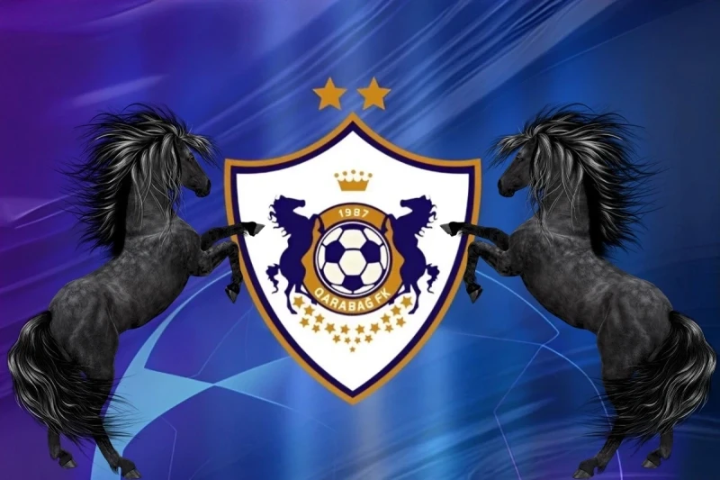
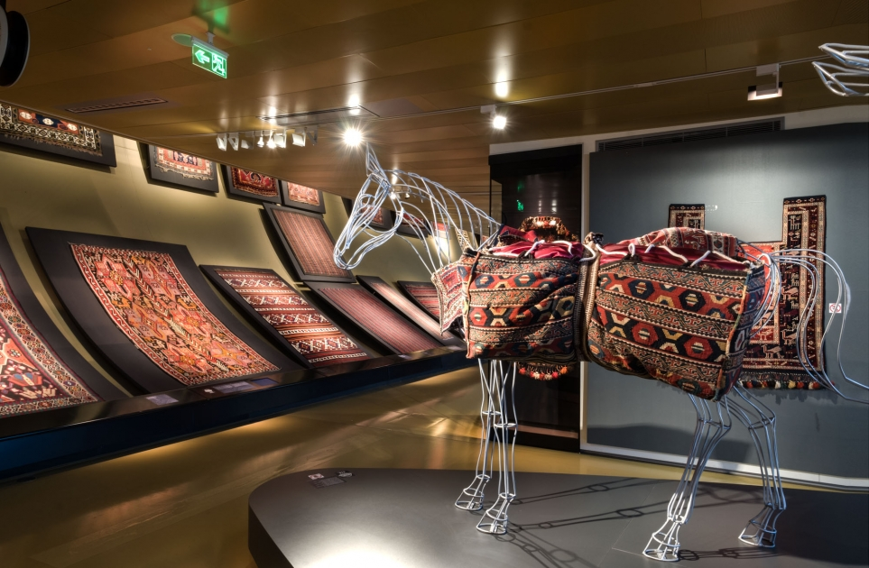

Karabağ Futbol Kulübü
1951 yılında kurulan Karabağ FK, sadece bir spor kulübü değil, bir halkın direnişinin sembolüdür. Şampiyonlar Ligi'ne katılan ilk Azerbaycan takımı olarak tarihe geçmiştir.
- #Atlılar
- #Ağdam
- #KarabağAze

Kız Kalesi (Qız Qalası)
UNESCO Dünya Mirası listesinde yer alan bu yapı, Bakü'nün en eski ve en gizemli sembolüdür. Yüzyıllardır Hazar kıyısında şehri selamlamaktadır.

Azerbaycan Halı Sanatı
Halılarımız, asırlık geleneklerin ve estetiğin ilmik ilmik işlendiği milli gururumuzdur. Karabağ ve Tebriz halıları bu sanatın zirvesidir.